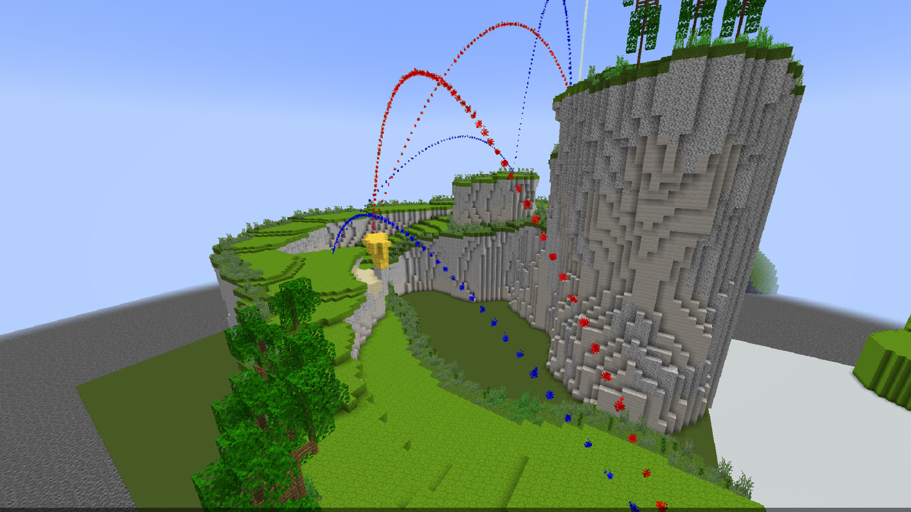
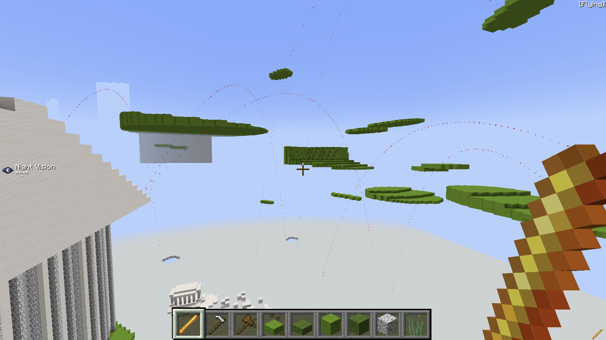
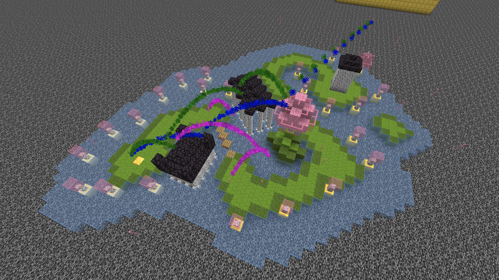
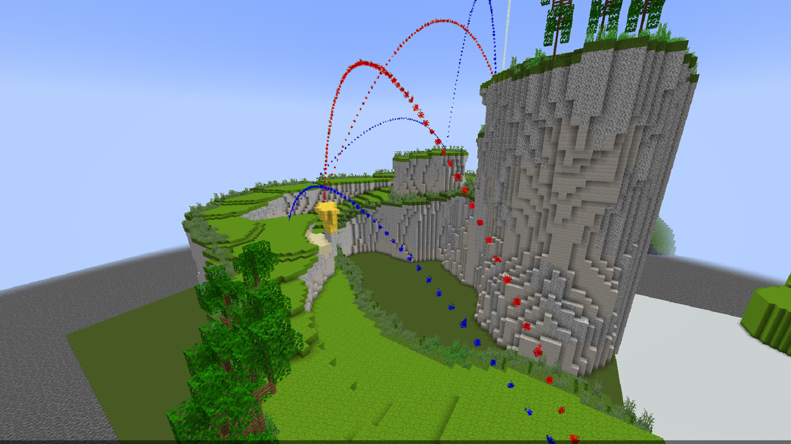
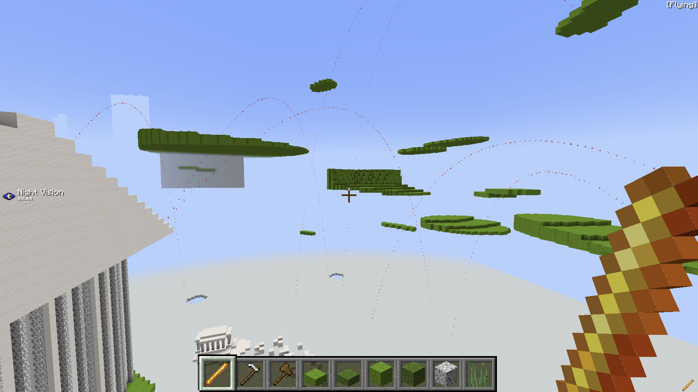
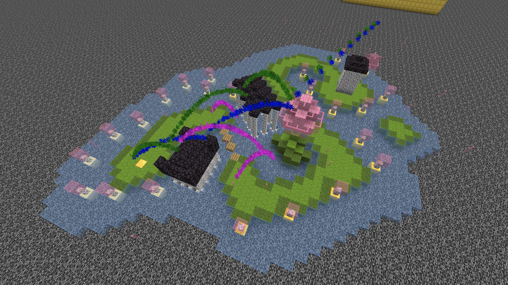
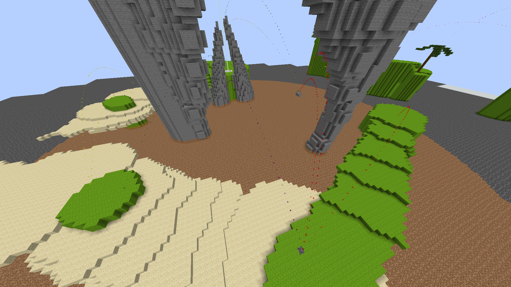
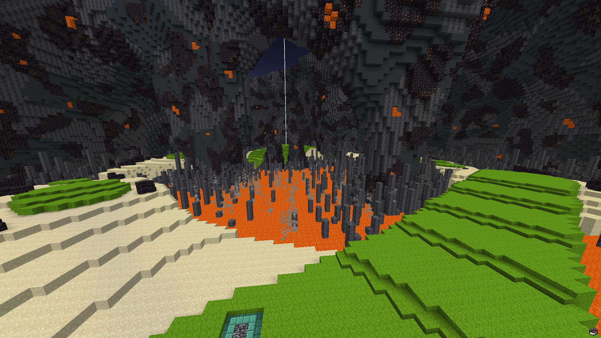

Nick Malone
Level Designer
Nick Malone
Level Designer
 





Players must make their way to the hole by shooting ender pearls with a bow. There are 9 holes, each with their own obstacles and shortcuts to provide unique gameplay for those who want to play casually or even speedrun. The “green” is actually ice which gives less friction for players when they hit the ground. The sand is soul sand which will force your next shot to be far less powerful. Landing in the water or void will reset your shot and add a stroke.
There was a previous iteration of Ender Golf that was used in Twitch Rivals and we wanted to make some gameplay changes to better suit a public gameplay experience and for map improvements. Each hole required you to go straight and get the maximum velocity with your bow to get the most distance as the holes were hundreds of blocks long. The map creation process was very long for the previous builders and also needed to be easier.
The new 9-hole course features more twists and turns, height variations and an overall downscale of the maps making it easier to create the holes within a 1 month time frame. One of the biggest issues with creating the layouts was understanding how far the shots would go and what their arcs would be. I was able to ask a developer to create a way to mark previous shots as particle trails which would help me determine the ideal paths for players to take with their shots.
Both drawings and mini-scale layouts were created of various holes before scaling them up into graymaps. Particle trails would be created to mark the intended paths both on the mini and to-scale layouts.
Most holes expect users to use full powered shots to get maximum distance. When scaling up a layout, I’d use the max distance to give a rough scale of how paths would pan out. Hazards would be placed around paths and sometimes on the max distance shots to require players to not shoot at 100% power constantly. These could be sand traps or blocked sightlines to other paths.
Hole 4 was a volcano theme and had 3 paths to get to the hole, each with its own risk and reward. The right path could get a Par 4 and has very little ways to get caught in a sand trap. The left path requires more precise shots with sand traps surrounding the islands of grass around it. The middle path is essentially hidden and requires a precise arc and power level to land on a podium which lines up for a hole-in-2.
 8 of the 9 holes were all gray mapped by myself. We had other builders working on this project who focused on aesthetics once the gray maps were complete. My focus on aesthetic work came with the landscaping to avoid situations where players could get stuck and to make sure it provided clean sight lines to shoot from. The public launch was a major success and had a good player retention, especially for players wanting to get on the leaderboards for fewest strokes and shortest time.